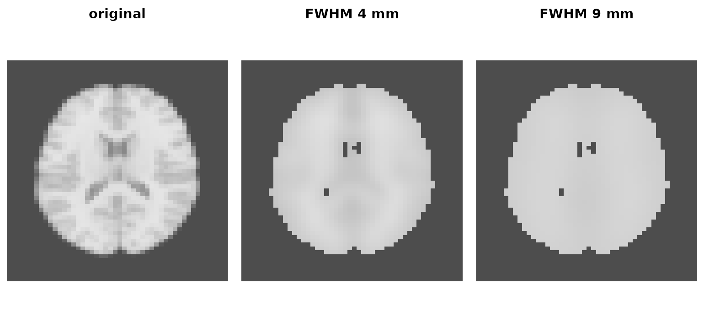
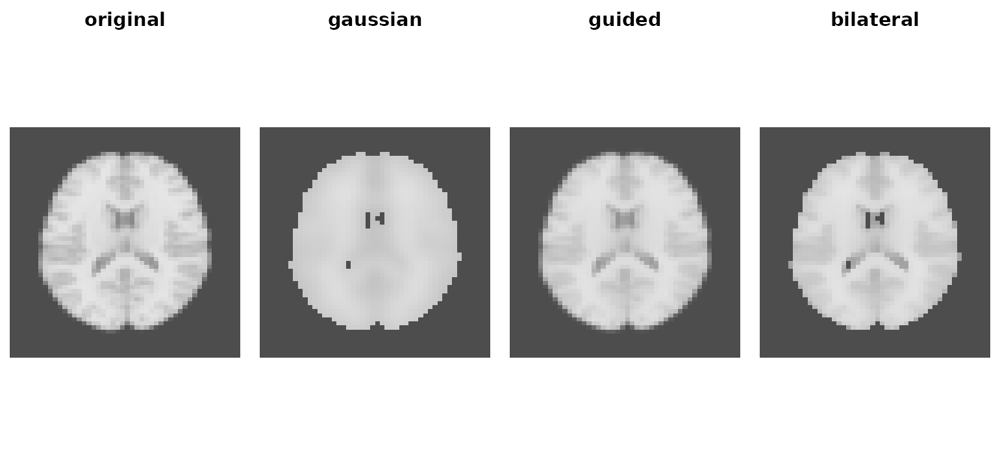
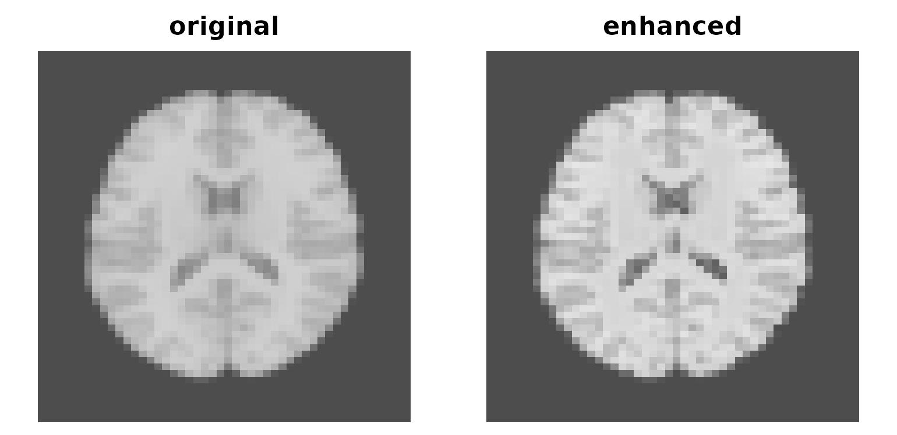

Filtering trades detail for noise. neuroim2 offers six filters that make the trade differently: some blur everything, some try to keep edges, one sharpens instead, and two work across time as well as space. This article shows what each does to the same image, measured rather than asserted.
anat <- demo_anatomy()
brain <- demo_anatomy_mask()
spacing(anat)
#> [1] 1 1 1That 1 mm matters for everything below: kernel widths are specified
in millimetres, so what a filter actually does depends on
sigma relative to the voxel size. On this
image the two happen to coincide.
Every number in this article is computed inside the brain mask. Statistics over the whole array are dominated by the 75% of voxels that are air, where every filter looks identical and every difference is invisible.
A helper to compare slices on a shared intensity scale:
compare <- function(..., z = 24) {
imgs <- list(...)
zlim <- range(vapply(imgs, function(v) range(v[, , z]), numeric(2)))
op <- par(mfrow = c(1, length(imgs)), mar = c(0.5, 0.5, 2, 0.5))
for (nm in names(imgs)) {
image(imgs[[nm]][, , z],
main = nm, zlim = zlim, col = gray.colors(256), axes = FALSE, asp = 1
)
}
par(op)
}Gaussian blur
gaussian_blur() is the fast, unconditional baseline:
every voxel becomes a weighted average of its neighbours regardless of
what is there.
light <- gaussian_blur(anat, brain, fwhm = 4)
heavy <- gaussian_blur(anat, brain, fwhm = 9)
compare(original = anat, `FWHM 4 mm` = light, `FWHM 9 mm` = heavy)
Gaussian smoothing at two kernel widths.
Specify the width however you like: fwhm in millimetres,
which is the unit smoothing is usually reported in, or
sigma in millimetres, which is the same thing divided by
2 * sqrt(2 * log(2)). Either way the kernel is sized from
what you asked for, so the smoothing you get is the smoothing you
specified:
# The point-spread function is the operator: smooth an impulse, read the width
# back out. This is the only honest check that a request was honoured.
psf_fwhm <- function(v, sp) {
a <- as.array(v); a[a < 0] <- 0
prof <- apply(a, 1, sum); off <- (seq_along(prof) - 21) * sp
mu <- sum(prof * off) / sum(prof)
2 * sqrt(2 * log(2)) * sqrt(sum(prof * (off - mu)^2) / sum(prof))
}
imp_sp <- NeuroSpace(c(41L, 41L, 41L), c(2, 2, 2))
imp <- array(0, c(41, 41, 41)); imp[21, 21, 21] <- 1
imp <- NeuroVol(imp, imp_sp)
c(
`asked 4 mm` = psf_fwhm(gaussian_blur(imp, fwhm = 4, normalize = FALSE), 2),
`asked 9 mm` = psf_fwhm(gaussian_blur(imp, fwhm = 9, normalize = FALSE), 2)
)
#> asked 4 mm asked 9 mm
#> 3.999316 8.999333window is still there, and still means what it always
did: the kernel support in voxels either side, which
truncates the Gaussian. Passing it reproduces the old
behaviour exactly, and that behaviour is worth seeing, because it is
easy to under-smooth by a lot without noticing:
c(
`sigma 4, window 1` = psf_fwhm(gaussian_blur(imp, sigma = 4, window = 1, normalize = FALSE), 2),
`sigma 4, window 2` = psf_fwhm(gaussian_blur(imp, sigma = 4, window = 2, normalize = FALSE), 2),
`sigma 4, derived` = psf_fwhm(gaussian_blur(imp, sigma = 4, normalize = FALSE), 2),
`requested` = 2 * sqrt(2 * log(2)) * 4
)
#> sigma 4, window 1 sigma 4, window 2 sigma 4, derived requested
#> 3.762809 6.074223 9.417647 9.419280A sigma of 4 mm inside window = 1 delivers
under 4 mm FWHM where 9.4 mm was asked for, and because
window counts voxels while sigma is in
millimetres, the shortfall depends on the voxel size — the same call
smooths a 1 mm structural and a 3 mm EPI differently. Leave
window alone unless you have a specific reason to clip the
kernel; truncate (default 4 standard deviations) is the
knob for trading accuracy against speed.
Handing gaussian_blur() a NeuroVec smooths
every volume with the same kernel, and does it in one compiled call over
the whole run rather than a loop in R — so pass the run, do not loop
over x[[i]] yourself. Volumes are smoothed in parallel;
RcppParallel::setThreadOptions() sets how many at a
time.
Edge-preserving filters
Gaussian blur does not know where anatomy stops.
guided_filter() fits local linear models, smoothing within
regions and leaving boundaries alone. bilateral_filter()
weights neighbours by intensity similarity as well as distance, so
voxels across a tissue boundary contribute little.
One parameter needs care. bilateral_filter()’s
intensity_sigma is a multiple of the image’s own
standard deviation, but guided_filter()’s
epsilon is absolute, in squared intensity
units. On an image scaled 0 to 9533 an epsilon of
0.5 is indistinguishable from zero; it has to be scaled to the data.
sd_in <- sd(baseline)
guided <- guided_filter(anat, radius = 1, epsilon = (0.6 * sd_in)^2)
bilateral <- bilateral_filter(anat, brain, spatial_sigma = 2, intensity_sigma = 1, window = 1)
compare(original = anat, gaussian = light, guided = guided, bilateral = bilateral)
Gaussian blur against two edge-preserving filters at matched support.
All three now use a one-voxel radius, so the comparison is about method rather than support. The question an edge-preserving filter has to answer is: how much variance can you remove per unit of distortion?
score <- function(x) {
v <- as.array(x)[inside]
removed <- 1 - var(v) / var(baseline)
distortion <- 1 - cor(v, baseline)
c(sd = sd(v), removed = removed, distortion = distortion,
ratio = removed / distortion)
}
round(rbind(
original = score(anat),
gaussian = score(light),
guided = score(guided),
bilateral = score(bilateral)
), 3)
#> sd removed distortion ratio
#> original 1350.807 0.000 0.000 NaN
#> gaussian 556.862 0.830 0.283 2.933
#> guided 1291.002 0.087 0.027 3.231
#> bilateral 1080.282 0.360 0.029 12.294bilateral_filter() removes a third of the variance for a
twentieth of the distortion — an exchange rate three times better than
the Gaussian’s, and that ratio is what “edge preserving” buys you.
gaussian_blur() removes more variance outright but pays the
most per unit for it. guided_filter() is the weakest of the
three at this epsilon: it barely smooths, and the little it
does costs about what the Gaussian charges. Raise epsilon
towards sd_in^2 to get more out of it.
Note that a plain whole-array sd() would have told you
the opposite story. Outside the mask these images are nearly constant,
so filters that flatten air look like strong denoisers when scored over
the full volume.
Sharpening
laplace_enhance() runs the other way, amplifying detail
with a multi-scale non-local scheme. It is a display and detection aid,
not a denoiser.
sharp <- laplace_enhance(anat, brain, k = 2, patch_size = 3, search_radius = 1, h = 0.7)
compare(original = anat, enhanced = sharp)
Laplacian enhancement increases local contrast rather than reducing it.
Pass the mask, whose second argument position is easy to skip. It is what keeps the enhancement off the background — and the background is where over-enhancement shows first:
outside <- which(as.vector(brain) == 0)
sharp_arr <- as.array(sharp)
round(rbind(
original = c(inside = sd(baseline), outside = sd(as.array(anat)[outside])),
enhanced = c(sd(sharp_arr[inside]), sd(sharp_arr[outside]))
), 2)
#> inside outside
#> original 1350.81 269.99
#> enhanced 2133.71 269.99Contrast inside the brain rises by more than half, which is the point, and the noise floor outside is untouched because the mask excluded it. Drop the mask and that second column climbs instead.
The output does go negative on a non-negative image, so clip before writing anything downstream:
range(sharp_arr)
#> [1] -122.0209 11914.8799Filtering across time
Two filters work on a NeuroVec, over space and time
together. Both need a series with real temporal structure:
bold_mask <- demo_mask()
bold <- demo_bold(n_time = 40)
attr(bold, "TR")
#> [1] 2bilateral_filter_4d() extends the bilateral idea along
the time axis. temporal_spacing is the units of that axis,
so it must be your TR — here read straight off the simulated series
rather than assumed:
bf4d <- bilateral_filter_4d(
bold, bold_mask,
spatial_sigma = 4, intensity_sigma = 1, temporal_sigma = 1,
spatial_window = 1, temporal_window = 1,
temporal_spacing = attr(bold, "TR")
)cgb_filter() decides which voxels belong together by
correlating their time courses rather than comparing
intensities. It builds a sparse graph — spatial proximity times
time-series affinity — and diffuses over it, which is the right model
for functional data where two voxels in a network should smooth together
even if their raw intensities differ.
out <- cgb_filter(
bold, mask = bold_mask,
spatial_sigma = 5, window = 1,
corr_map = "power", corr_param = 2,
topk = 16, passes = 1, lambda = 1,
return_graph = TRUE
)Both should reduce per-voxel noise. Measure on a random sample of in-mask voxels — taking the first 300 by linear index gives you a contiguous patch in the bottom slice, where support is truncated and neighbours are trivially correlated:
set.seed(1)
sample_idx <- sample(which(as.vector(bold_mask) > 0), 300)
noise <- function(x) mean(apply(as.matrix(x)[sample_idx, ], 1, sd))
c(raw = noise(bold), bilateral_4d = noise(bf4d), cgb = noise(out$result))
#> raw bilateral_4d cgb
#> 1.1665227 0.8299609 0.7860965return_graph = TRUE kept the graph, so further passes
cost nothing to set up:
c(
raw = noise(bold),
pass_1 = noise(out$result),
pass_2 = noise(cgb_smooth(bold, out$graph, passes = 2))
)
#> raw pass_1 pass_2
#> 1.1665227 0.7860965 0.6383422Building the graph is the expensive part of
cgb_filter(); cgb_smooth() reuses it, which is
how you explore passes and lambda without
paying for it each time.
Choosing
| Want | Use | Watch out for |
|---|---|---|
| A fast, predictable baseline | gaussian_blur() |
give fwhm or sigma; setting
window truncates the kernel |
| Denoise but keep boundaries | bilateral_filter() |
intensity_sigma scales with the image
SD |
| Same, local-linear formulation | guided_filter() |
epsilon is absolute, in intensity
squared |
| More visible detail, not less | laplace_enhance() |
raises the noise floor; can go negative |
| Joint space and time denoising | bilateral_filter_4d() |
temporal_spacing must be your TR |
| Smoothing that follows networks | cgb_filter() |
needs real temporal structure |
Where to go next
-
vignette("visualization")— inspecting the results of any of these -
vignette("resampling-and-orientation")— changing the grid rather than the values -
?gaussian_blur,?guided_filter,?cgb_filter,?cgb_smooth